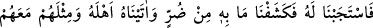
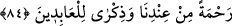

84. Bunun üzerine biz, tarafımızdan bir rahmet ve kulluk edenler için bir hatıra
olmak üzere onun duâsını kabul ettik; kendisinde dert ve sıkıntı olarak ne varsa
giderdik ve ona aile efradını, ayrıca bunlarla birlikte bir mislini daha verdik.
“Bunun üzerine biz, tarafımızdan bir rahmet…” yâni ona verdiklerimizi kendisine
olan hususi rahmetimizden dolayı “ve kulluk edenler için bir hatıra olmak üzere”
bizim kudretimizin kemâl üzere olduğunu bilmeleri, Eyyûb’un sabrı gibi sabredip onun
gibi sevâba nâil olmaları için diğer âbidlere öğüt ve ibret olmak üzere verdik “onun
duâsını kabûl ettik;” duâsına icâbet ettik “kendisinde dert ve sıkıntı olarak ne varsa
giderdik” onda olan sıkıntıyı ve hastalığı yok ettik; yâni ona şifâ verdik.
Rivâyete göre Eyyûb (a.s.)’a bir cuma günü seher vaktinde ya da zeval vaktinde:
“Başını kaldır, senin duânı kabûl buyurdum, ayağını yere vur.” buyruldu. Bunun üzerine
Eyyûb (a.s.) ayağını yere vurdu ve oradan bir su kaynadı. Onunla yıkandığı vakit bütün
yaraları iyileşti. Sonra ayağını bir daha vurdu. Oradan da başka bir pınar fışkırdı.
Ondan içtiği vakit içinde hastalıktan eser kalmadı. Sıhhatine kavuştu, gençliği ve
güzelliği geri geldi. Sonra da ona bir hulle giydirildi.”
Büyüklerden birisi şöyle der: “Hz. Eyyûb’un o hastalığa mübtelâ kılınması, yüce
makamlara ulaşıp kemale ermesi için meşakkatli riyâzatlar ve türlü bedenî
mücâhedelerle varlığını tasfiye etmek içindir. Ona ayağını nefis arzına vurması
emredildi ki misal âleminde tecessüm etmiş olan hakîkî hayat suyu zâhir olsun. O suyla
yıkasın ki bedeninden cismânî hastalıklar, kalbinden de ruhânî marazlar zâil olsun. İşte
Eyyûb (a.s.) mücâhede edip istîdâdı kötü sıfatlardan arınınca ve ilâhî feyzi kabûl
etmeye hazır hâle gelince, rûhâniyet makamından ona hayat suyu zâhir oldu. O suyla
yıkandı. Böylece zâhirinden ve bâtınından kendisini perdeleyen, ilâhî huzûrdan
uzaklığına sebep olan illetlerden kurtuldu.”
Derler ki: Aziz ve şerefli kimseye yakın olan, izzetli ve şerefli olur. Alçak ve hakir
kimseye yakın olan da zelil ve hakir olur. Görmez misin ki saba rüzgarı güllere ve
çiçeklere uğrayınca güzel kokular taşır getirir. Pisliklere uğrayınca da kötü kokular
getirir. Nefsin kötü sıfatlarıyla arkadaş olan kimse ile rûhun ahlâkına komşu olan
kimseyi buna kıyas et.
Şeyh Sa‘dî (k.s.) der ki:
Bana bir gün hamamda bir güzel mahbub
Verdi bir parça kil, güzel kokulu
Dedim, ey kil ne hoş kokun var
Bir çamurda görülmemiş bu koku
Dedi: Ben zavallı bir kildim
Fakat bir zaman gülle arkadaşlık ettim